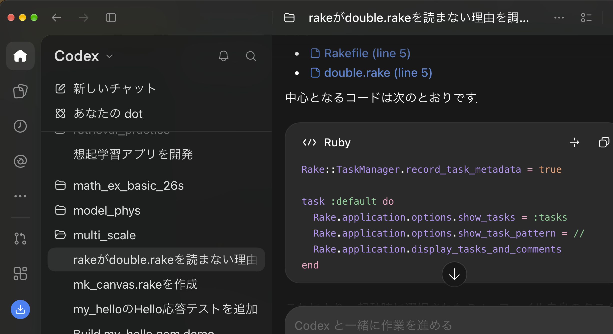

Agentic application comparison
Table of Contents
prev_button up_button next_button
 |
1. turn 1 : RAGでの構成
1.1. user
そうすると，LLMに役割を与えて別のagent機能を持たせ，作業を組み立てることが可能なのですね．これからRAGを作ろうとしているのですが，orchestartionを実行するには何が必要ですか？
1.2. codex
はい，可能です．ただし，RAGでは最初からすべてをagentにする必要はありません．検索処理は通常のツールとして実装し，LLM agentが「いつ，何を，どの条件で検索するか」を判断する構成が扱いやすいです．
必要な構成
ユーザー
↓
Orchestrator agent
├─ 質問の分類・検索方針の決定
├─ Retrieval tool ─→ Vector DB／文書DB
├─ 回答生成
└─ 根拠確認・品質評価
↓
出典付き回答
1．検索可能な知識基盤
まず，RAGそのものに必要なデータ基盤を用意します．
- 文書の収集と前処理
- 適切な単位へのchunk分割
- embeddingの生成
- vector databaseへの登録
- 文書名，日付，著者，権限などのmetadata
- semantic search，キーワード検索，metadata filtering
- 必要に応じたreranking
OpenAIを使う場合は，Vector StoreとFile Searchを利用すると，chunking，embedding，indexingをマネージドで実行できます．OpenAI Docs：Retrieval
2．Retrieval tool
agentから呼び出せる検索インターフェースが必要です．たとえば，次のような入出力を持たせます．
入力：
query
document_type
date_range
top_k
出力：
document_id
passage
score
source
metadata
検索結果を構造化して返すことが重要です．これにより，agentは取得した文書を比較し，回答の根拠を明示できます．
3．Orchestrator agent
Orchestratorは，ユーザーの質問を受け取り，次の処理を決定します．
- RAG検索が必要か
- 質問をどのような検索クエリへ変換するか
- 検索を何回行うか
- 追加検索が必要か
- どの専門agentへ処理を渡すか
- 十分な根拠が得られたか
- 最終回答を生成してよいか
このagentには，LLMだけでなく，指示，利用可能なツール，状態，停止条件を与えます．
Orchestrator agent
＝ LLM
＋ system instructions
＋ retrieval tools
＋ conversation state
＋ routing rules
＋ stopping conditions
4．Agent間の役割と入出力契約
複数agentにする場合は，たとえば次のように分担できます．
- Orchestrator agent：全体の判断と最終回答を担当する．
- Search agent：検索クエリを作り，文書を収集する．
- Synthesis agent：複数の文書を統合する．
- Reviewer agent：回答が根拠に基づいているか確認する．
各agentについて，役割だけでなく，入力形式，出力形式，利用可能なツール，終了条件を明示する必要があります．
RAGでは，Orchestratorが最終回答の所有権を持ち，専門agentをツールとして呼び出す構成が比較的管理しやすいです．専門agentへ会話そのものを引き渡すhandoff方式もありますが，最終回答の担当が切り替わります．OpenAI Docs：Orchestration and handoffs
5．状態とコンテキストの管理
Orchestratorは，次の状態を保持する必要があります．
- 元の質問
- 作成済みの検索クエリ
- 取得した文書と出典
- 不足している情報
- agentの実行履歴
- 残りの検索回数
- 最終回答の生成可否
ただし，全履歴をすべてのagentへ渡すと，コストが増え，判断も不安定になります．各agentには，その役割に必要な情報だけを渡すのが基本です．
6．品質管理と安全制御
最低限，次の制御が必要です．
- 最大検索回数と最大実行時間
- 根拠がない場合に「不明」と回答する規則
- 出典のない主張の検出
- 文書アクセス権限の確認
- prompt injectionへの対策
- agentごとのログとtrace
- コスト，遅延，失敗回数の監視
- 評価用質問セットによる継続的なテスト
評価指標としては，検索のRecall@k，回答の正確性，根拠との整合性，引用の正しさ，応答時間，実行コストなどを使用します．
推奨する実装順序
最初は，次の単純な構成から始めるのがよいでしょう．
質問
→ 単一agent
→ Retrieval tool
→ 出典付き回答
次に，必要性が確認できた段階で，以下を順に追加します．
- 質問の分類とquery rewriting
- 複数回検索とreranking
- 回答を検証するReviewer agent
- 分野別の専門Search agent
- 並列検索と結果統合
OpenAIを使う場合，単純なRAGはResponses API ＋ File Searchで構成できます．複数agent，handoff，guardrail，context管理が必要になった段階でAgents
SDKを導入できます．公式ドキュメントでも，Responses
APIではアプリケーション側で制御でき，複雑なオーケストレーションにはAgents
SDKが選択肢として示されています．OpenAI Docs：Building agents
要点は，「検索」「生成」「検証」のすべてをagent化するのではなく，判断が必要な部分だけをagentにし，確定的に実行できる処理はtoolとして実装することです．これにより，RAGの動作をテストしやすくし，コストと予測不能性を抑えられます．